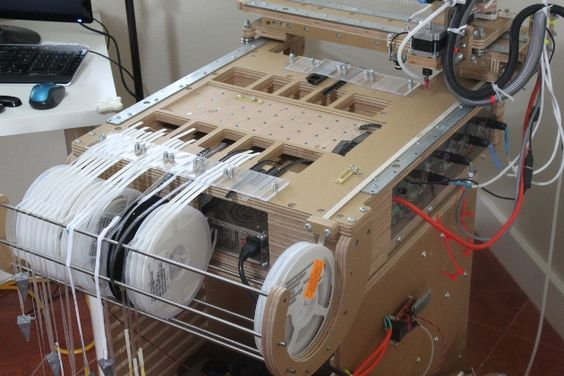

Assignment: plan and sketch a potential final project
Electronic Components Vending Machine: For my final project I decided on developing a very necessary Fab Machine. A vending machine of electronics components. I hope this machine will take some of the burden of fab Managers free from doing inventory and sale of components, as everything will happen automatically.

Currentely electronics vending machine use the soda/snack vending machine platform. I belive besides the hight cost of such machines plus its excessive foot print its a prohibitive equipment specially in small labs.

The other thing that bothers me is the necessity to repackage the electronics to be sold. That on itself is a boring task that should be avoided as it creates waste from packaging material and time waste to prepare the packages.
The payment system should be one that uses virtual currency so to eliminate yet another managerial task. With electronic payment everything will be automatically accounted for without human intervention. During my stay in China I came across the Wechat and Alypay payment systems. These systems alow you to pay virtually everything in China. They are easy to set up but not yet available outside China for that reason it might be necessary to develop an option or find something similar.
Machine Description:
The machine will use current electronic reels used for electronics packaging to be feed on pick and place machines. The DIY Pic and place bellow illustrates the reel system I would like to incorporate.

Because sometimes it's not possible to stock such quantities of electronics on a Fab Lab the machine should also be able to use already cut electronics packaging strips stored in the machine itself.
I plan to use a guide as on PIC. 02 to guide the stripes along the machine;

Scketch:

Parts:
- reel
- reel support
- gear and motors
- cutter
- QR code
- dispenser
- site
- control

User steps:
- User scans QR code (leads to app/site)
- user login
- From App user selects desired components and quantities
- User confirm/pay for itens
- Machine supplies and cut component tape
- Componet falls to collecting points
- User collects component
Manager Steps:
- manager feeds machine with new components
- manager updates inventory thru software, with price, quantity and type